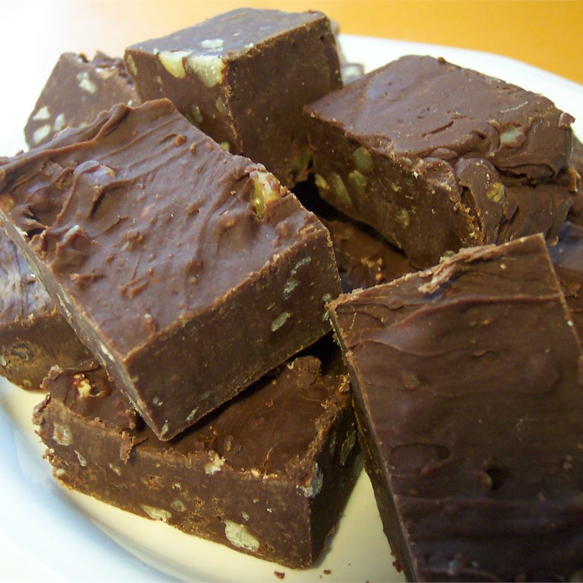

Chocolate Fudge

Description
This Chocolate Fudge is one of the best deserts you would ever try. Their is nothing like that rich flavor of chocolate. This chocolate fudge would have you begging for more. It is already popular in many different countries. Its only going to continue to skyrocket.
Ingredients
- 16 ounces semisweet chocolate
- 1 (14 ounce) can sweetened condensed milk
- 2 teaspoons vanilla extract
- 1½ cups chopped walnuts
Steps
- Line an 8x8 inch square dish with aluminum foil.
- Chop chocolate and place in a large, microwave safe bowl with condensed milk. Microwave on high, stirring once or twice
until chocolate is soft, 2 to 3 minutes. Remove from oven and stir until completely smooth. Stir in vanilla and walnuts.
Spread in prepared pan.
- Refrigerate 2 hours, until firm. Cut into squares.